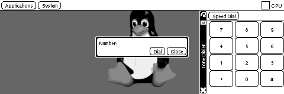

Revol
Main |
Screenshots |
FAQ |
Downloads |
Links |
Development Stuff |
Packages |
GitHub repository
PicoTone
This is a small PicoGUI DTMF tone dialer that you can use to dial numbers
on phones with touch tone exchanges.

Download
Simon Howard.
I am not associated with Psion Digital.